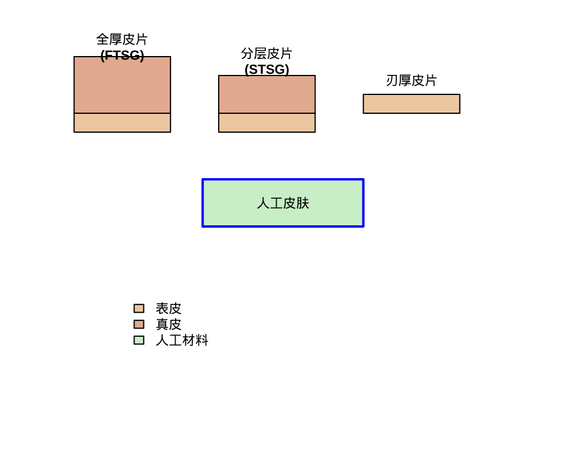
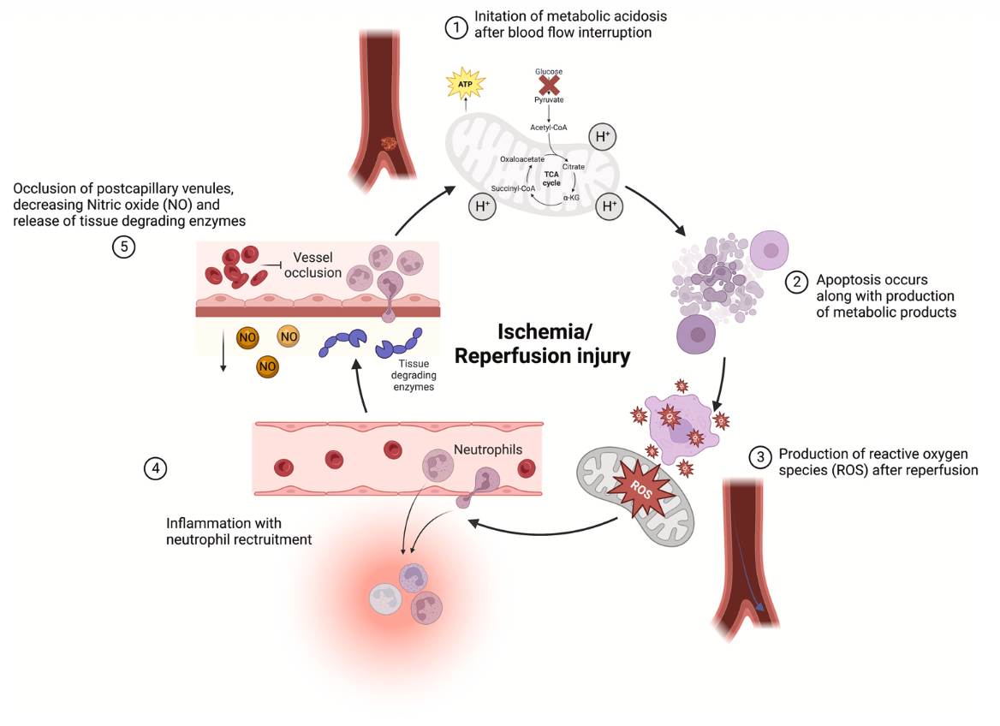

timeline
title 皮肤移植古代发展史
section 古印度时期 (公元前600年)
皮肤移植最早记录 : 古印度《苏悉吠陀》记载<br>皮瓣转移技术
额皮瓣鼻重建 : 世界最早的区域皮瓣技术<br>修复鼻部缺损
section 古罗马时期
动物皮肤尝试 : 使用动物皮进行创面覆盖<br>成功率有限
section 中世纪欧洲
技术停滞期 : 宗教与医学发展限制<br>外科技术进展缓慢
皮肤的’移植’到’再生’：修复技术的智慧抉择
医学技术演进研究
皮肤的战争与重建
当人体最大的器官——皮肤，在战争中’失守’
- 烧伤、创伤、肿瘤切除
- 慢性溃疡、先天缺陷
- 如何帮助身体’重建家园’？
皮肤的战争与重建
今天我们将探索：
- 皮肤移植的历史与现状
- 传统外科的巧夺天工
- 生物工程的再造奇迹
- 最佳策略的智慧选择
当人体最大的器官——皮肤，在战争中’失守’
- 烧伤、创伤、肿瘤切除
- 慢性溃疡、先天缺陷
- 如何帮助身体’重建家园’？
皮肤分层结构
- 表皮：保护层，厚度0.5-1.0mm
- 手掌/脚掌最厚(~1mm)，眼睑最薄(~0.5mm)
- 角质层是主要载荷承受层
皮肤结构
皮肤分层结构
- 真皮：机械性能主要贡献者
- 厚度0.7-1.5mm
- 包含胶原纤维(75%干重)、弹性纤维(2-4%干重)
皮肤结构
皮肤分层结构
- 皮下组织：缓冲层
- 脂肪和结缔组织
- 能量储存和冲击吸收
皮肤结构
皮肤机械特性概述
各向异性特性
- 沿Langer线：强度更高
- 垂直Langer线：强度较低

黏弹性行为
- 应变率依赖性
- 应力松弛现象
皮肤机械特性概述
黏弹性行为
- 像弹簧
- 瞬时变形与恢复
- 能量完全储存
- 应力-应变关系
- 像蜂蜜
- 时间依赖性流动
- 能量耗散为热
- 应力-应变率关系
影响因素与临床意义
关键影响因素
- 方向性 - Langer线方向影响手术切口设计
- 水分含量 - 影响组织柔顺性和缝合强度
- 年龄因素 - 年轻皮肤更具弹性
- 温度效应 - 影响胶原稳定性
影响因素与临床意义
移植手术中的考虑
“理解皮肤机械特性对于优化皮瓣设计和提高移植成功率至关重要”
- 皮瓣设计：考虑Langer线方向以获得更好的愈合
- 缝合策略：基于组织强度选择缝合方式
- 术后护理：控制湿度和温度以维持组织完整性
皮肤移植：定义与目标
皮肤移植简介
- 将健康皮肤移植到受损区域的外科技术
- 常用于烧伤、创伤、感染、肿瘤切除后的覆盖
- 核心目标：恢复组织覆盖、促进愈合、改善功能与外观
皮肤移植：定义与目标
主要应用场景
- 急性创伤修复
- 烧伤创面覆盖
- 肿瘤切除后重建
- 慢性溃疡治疗
- 先天畸形矫正
皮肤移植简介
- 将健康皮肤移植到受损区域的外科技术
- 常用于烧伤、创伤、感染、肿瘤切除后的覆盖
- 核心目标：恢复组织覆盖、促进愈合、改善功能与外观
皮肤移植发展史：古代起源
皮肤移植发展史：古代起源
关键技术突破：
- 古印度技术：开创了皮瓣转移的先河
- 额皮瓣技术：成为现代整形外科的雏形
- 早期探索：虽成功率低，但奠定了实践基础
皮肤移植发展史：近代复兴
timeline
title 皮肤移植近代发展
section 17-18世纪
1668年 : Tagliacozzi描述上臂皮瓣<br>修复鼻缺损技术
系统化尝试 : 首次提出系统性<br>皮肤替代方案
section 19世纪奠基
1804年 : Baronio报告自体皮片移植
1869年 : Reverdin发明针头移植法
1872年 : Thiersch推广薄片皮肤移植
19世纪末 : 全厚皮片技术框架形成
皮肤移植发展史：近代复兴
重要里程碑：
- Tagliacozzi皮瓣：虽因宗教争议被放弃，但开创了系统化修复
- 针头移植法：开启了真正可重复的皮片移植时代
- Thiersch移植技术：奠定了现代皮片移植的基础
皮肤移植发展史：20世纪成熟
timeline
title 20世纪技术成熟期
section 上半叶 (1900-1950)
1920-1940年代 : Burns、Davis完善<br>自体与全厚皮片技术
二战推动 : 烧伤医学快速发展
1941年 : Padgett与Hood发明<br>电动取皮刀
section 下半叶 (1950-2000)
1950-1970年代 : 免疫学兴起<br>明确排斥反应机制
1960年代 : 冷冻保存尸体皮革<br>成为标准技术
1970年代 : 网状皮片技术发明<br>扩展覆盖面积
微外科奠基 : 现代重建外科基础确立
皮肤移植发展史：20世纪成熟
技术突破：
- 电动取皮刀：实现皮片厚度可控化
- 免疫学进展：明确移植排斥机制
- 网状皮片：解决大面积烧伤覆盖难题
皮肤移植发展史：现代革命
timeline
title 现代皮肤移植革命
section 组织工程时代
1981年 : 第一代人工皮肤<br>Integra研发成功
1990年代 : 培养角质细胞移植<br>用于大面积烧伤
2000年代 : 生物材料、胶原基质<br>可降解支架快速发展
section 再生医学时代
干细胞应用 : 皮肤再生研究突破
3D生物打印 : 精准构建皮肤结构
基因编辑 : 减少排斥反应
跨物种移植 : 猪来源皮肤研究
皮肤移植发展史：现代革命
未来方向：
- 从”覆盖创面”到”完全再生皮肤结构与功能”
- 个性化定制修复方案
- 功能性皮肤附件重建
手术方案：皮肤移植类型
自体皮肤移植
分层皮片移植（STSG）
全厚皮片移植（FTSG）
手术方案：皮肤移植类型
自体皮肤移植
- 使用患者自身皮肤
- 无排斥反应，最常用
- 分为分层皮片和全厚皮片
分层皮片移植（STSG）
- 包含表皮和部分真皮
- 薄皮片，易存活
- 适合大面积缺损
- 供区可自行愈合
全厚皮片移植（FTSG）
- 包含表皮和全部真皮
- 适合小面积高要求部位
- 外观功能更好
- 供区需缝合或另取皮覆盖

手术步骤概述
graph TD
A[术前评估] --> B[创面与供区准备]
B --> C[移植物获取]
C --> D[移植覆盖]
D --> E[固定包扎]
E --> F[术后护理]
A --> A1[评估创面条件]
A --> A2[选择供皮区域]
C --> C1[取皮技术]
C --> C2[皮片修整]
C --> C3[网状扩张]
F --> F1[感染控制]
F --> F2[保持贴合]
F --> F3[功能康复]
style A fill:#e1f5fe
style F fill:#f1f8e9
关键步骤详解：
- 术前评估：创面血供、感染状况、患者全身情况
- 移植物准备：精确厚度控制、适当扩张处理
- 术后管理：严格感染预防、最佳愈合环境维持
皮瓣移植：自带血供的修复
根本区别：自带血液供应
graph LR
A[皮肤缺损评估] --> B{深度缺损?<br>骨/肌腱外露?}
B -->|是| C[选择皮瓣移植]
B -->|否| D[考虑皮肤移植]
C --> E[局部皮瓣]
C --> F[区域皮瓣]
C --> G[游离皮瓣]
E --> H[邻近组织转移]
F --> I[带蒂旋转覆盖]
G --> J[显微血管吻合]
style C fill:#fff3e0
style D fill:#e8f5e8
皮瓣存活的挑战与护航
缺血再灌注损伤机制
皮瓣存活的挑战与护航
护航策略：
- 缺血预处理
- 抗氧化剂应用
- 干细胞疗法
- 药物保护
- 促进血管新生
目标：
- 提高皮瓣存活率
- 减少并发症
- 改善修复效果
临床决策
graph TD
A[创面评估] --> B{深部组织暴露?<br/>骨/肌腱/神经/血管};
B -->|是| C[皮瓣移植];
B -->|否| D{缺损面积};
D -->|小 <3cm²| E{血供状况};
D -->|中 3-10cm²| F{血供状况};
D -->|大 >10cm²| G{血供状况};
E -->|良好| H[全厚皮片移植 FTSG];
E -->|中等| I[分层皮片移植 STSG];
E -->|差| J[生物工程皮肤];
F -->|良好| K[分层皮片移植 STSG];
F -->|中等| L[网状皮片移植];
F -->|差| J;
G -->|良好| M[网状皮片移植];
G -->|中等| N[培养表皮细胞移植];
G -->|差| J;
%% 特殊情况分支
H --> O{特殊部位?};
O -->|面部/手部| H;
O -->|关节/功能部位| I;
J --> P{感染控制?};
P -->|已控制| J;
P -->|未控制| Q[延期移植];
%% 证据等级标注
C -.->|证据等级 B| R[游离皮瓣/轴型皮瓣];
H -.->|证据等级 A| S[颜色质地匹配];
K -.->|证据等级 A| T[供区充足];
M -.->|证据等级 B| U[扩展比例 1:1.5-3];
J -.->|证据等级 B| V[Integra/Apligraf];
%% 关键决策点样式
classDef critical fill:#ffe6e6,stroke:#ff6666,stroke-width:2px;
classDef important fill:#e6f3ff,stroke:#3399ff,stroke-width:2px;
classDef standard fill:#f0f0f0,stroke:#cccccc,stroke-width:1px;
class B,A critical;
class D,E,F,G important;
class H,I,K,L,M,J standard;
生物工程皮肤：现代解决方案
技术原理：支架 + 细胞 + 信号 = 活皮肤
graph LR
%% 输入材料层
subgraph Materials [基础构建材料]
A[生物材料支架]
B[细胞成分]
C[生物活性因子]
end
%% 支架材料分类
subgraph Scaffolds [支架材料类型]
direction TB
A1[天然材料]
A2[合成材料]
A3[复合材料]
end
%% 细胞成分分类
subgraph Cells [细胞来源与类型]
direction TB
B1[自体细胞]
B2[同种异体细胞]
B3[干细胞]
end
%% 生物活性因子
subgraph Factors [生物活性信号]
direction TB
C1[生长因子]
C2[细胞因子]
C3[酶调节剂]
end
%% 连接关系
A --> Scaffolds
B --> Cells
C --> Factors
%% 样式定义
classDef materials fill:#e3f2fd,stroke:#1565c0
classDef scaffolds fill:#e8f5e8,stroke:#2e7d32
classDef cells fill:#f3e5f5,stroke:#7b1fa2
classDef factors fill:#fff3e0,stroke:#ef6c00
class Materials materials
class Scaffolds scaffolds
class Cells cells
class Factors factors
生物工程皮肤：现代解决方案
技术原理：支架 + 细胞 + 信号 = 活皮肤
优势特点：
- 无供区损伤
- 可大规模生产
- 减少免疫排斥
- 促进功能性再生
技术演进总结
传统智慧
历史贡献
现代革命
决策核心
技术演进总结
传统智慧
- 皮片：皮肤的’播种’
- 皮瓣：自带’后勤部队’
- 成熟可靠，效果明确
历史贡献
- 古印度开创皮瓣技术
- 19世纪奠定皮片基础
- 20世纪完善技术体系
现代革命
- 生物工程：’制造’皮肤
- 解决供区瓶颈
- 个性化修复可能
决策核心
- 基于创面特征选择
- 考虑患者整体状况
- 平衡功能与美观
graph TD
A[创面评估] --> B{技术选择}
B --> C[传统技术]
B --> D[现代技术]
C --> E[皮片移植]
C --> F[皮瓣移植]
D --> G[生物工程皮肤]
D --> H[3D打印技术]
E --> I[快速覆盖]
F --> J[功能重建]
G --> K[解决供区限制]
H --> L[精准个性化]
style C fill:#e3f2fd
style D fill:#f3e5f5
未来展望：智能与再生
技术前沿：
- 3D生物打印：血管化皮肤构建
- 人工智能：个性化方案设计
- 干细胞技术：功能性附件再生
- 智能材料：响应式修复调控
发展方向：
- 从创面覆盖到功能重建
- 从标准化到个性化
- 从被动修复到主动再生
未来展望：智能与再生
挑战与机遇：
- 成本控制与普及
- 监管审批路径
- 长期效果验证
- 伦理考量
结语：从技术到人文的回归
技术演进脉络：
%%{init: {'theme': 'base', 'themeVariables': {
'titleColor': '#ffffff',
'primaryColor': '#3498db',
'primaryTextColor': '#ffffff',
'primaryBorderColor': '#2980b9',
'lineColor': '#e74c3c'
}}}%%
timeline
title 皮肤修复技术演进
古代 : 皮瓣技术萌芽
19世纪 : 皮片移植奠基
20世纪 : 技术体系完善
21世纪 : 再生医学革命
未来 : 智能精准修复
结语：从技术到人文的回归
第一重：技术积累
- 从古印度皮瓣到现代显微外科
- 从简单覆盖到功能性重建
- 从自体移植到生物工程
结语：从技术到人文的回归
第一重：技术积累
第二重：智慧决策
- 基于循证医学的精准选择
- 个体化修复方案的制定
- 多维度临床评估体系
结语：从技术到人文的回归
第一重：技术积累
第二重：智慧决策
第三重：人文关怀
- 从创面闭合到生活质量重建
- 从功能恢复心理康复
- 从技术操作到生命尊严
结语：从技术到人文的回归
第一重：技术积累
第二重：智慧决策
第三重：人文关怀
终极目标
皮肤修复的历程，是从古代皮瓣到现代再生的完整进化史。
其最终目的，不仅仅是闭合一个创口，更是重建一个人的生活、尊严与希望。
谢谢聆听

生死契约：器官移植的前世今生 B 组